Perspectives on product,
transformation, and leadership.
Perspectives on the realities of product, leadership, and transformation in international organizations.
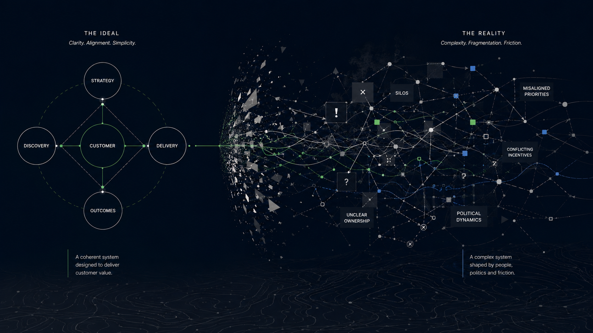
Most Product Advice Assumes Functional Organizations
A large portion of modern product thinking assumes organizations already have alignment, trust, clarity, and healthy incentives. Many companies do not. And when they don't, the standard advice doesn't just fail to help — it can actively make things worse.
Strategic Foundations
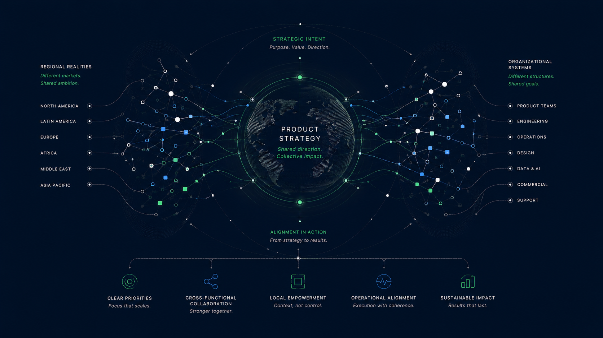
Product Strategy in Complex Organizations
In international organizations, product strategy is rarely only about prioritization. More often, it is about alignment across cultures, teams, and different ways of understanding the same objective.
Read perspective →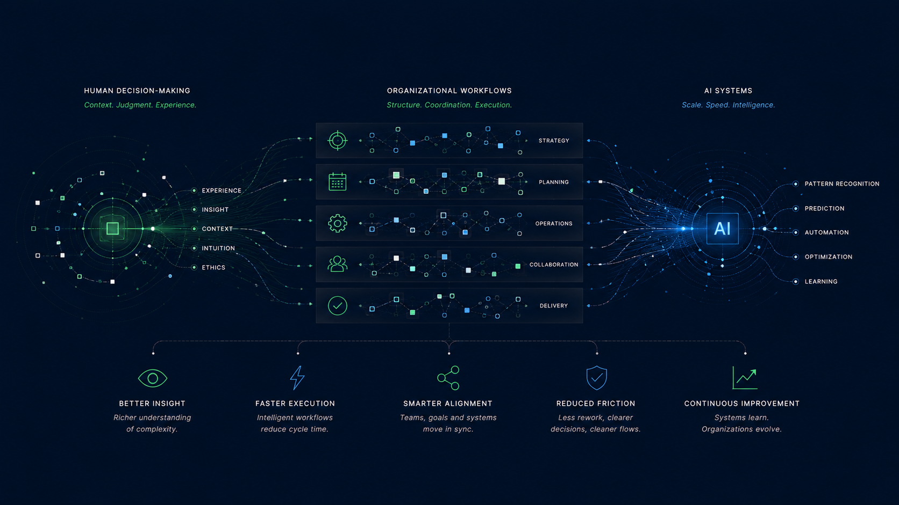
AI and the Future of Workflows
Artificial intelligence will not simply automate tasks. It will reshape how organizations communicate, collaborate, and operate across increasingly complex international environments.
Read perspective →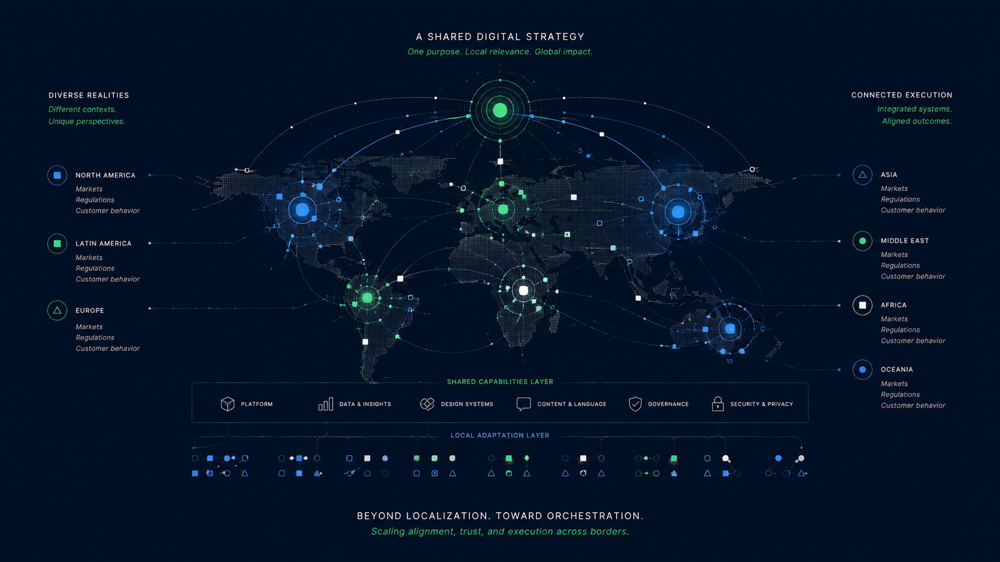
International Digital Growth Beyond Localization
International digital growth is not simply a translation exercise. It is the challenge of scaling alignment, trust, and execution across cultures, markets, and organizational realities.
Read perspective →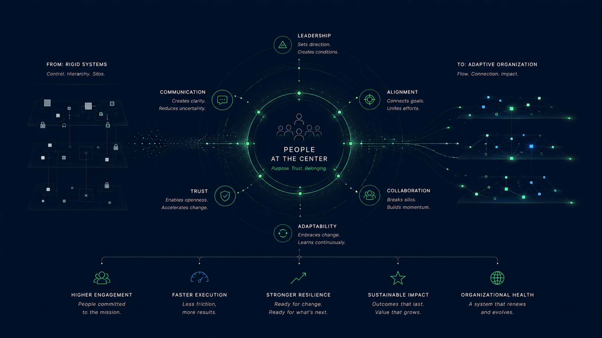
People-Centered Transformation
Digital transformation succeeds or fails less because of technology itself and more because of how organizations guide people through complexity, ambiguity, and change.
Read perspective →Organizational Reality
Most Product Advice Assumes Functional Organizations
A large portion of modern product thinking assumes organizations already have alignment, trust, clarity, and healthy incentives. Many companies do not.
Read perspective →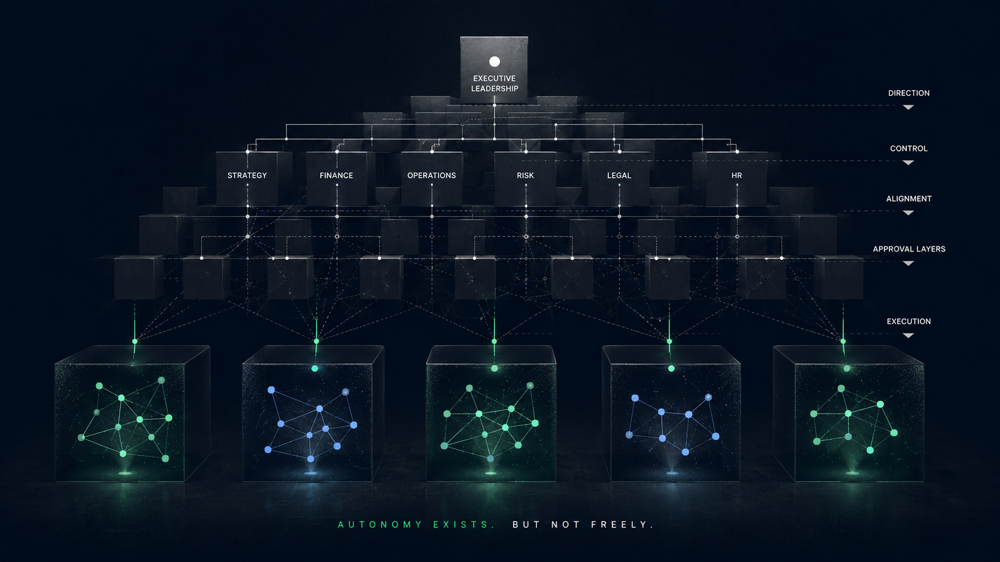
Empowered Teams Are Not a Process
Many organizations try to implement empowered teams structurally while preserving the exact conditions that prevent empowerment from existing.
Read perspective →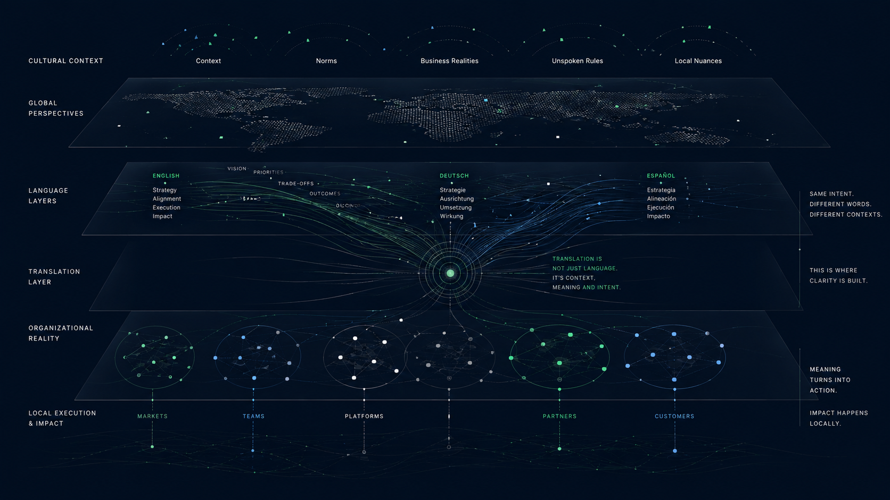
The Most Important Product Skill Is Organizational Translation
At scale, product management becomes less about backlog prioritization and more about translating between people, incentives, cultures, and organizational realities.
Read perspective →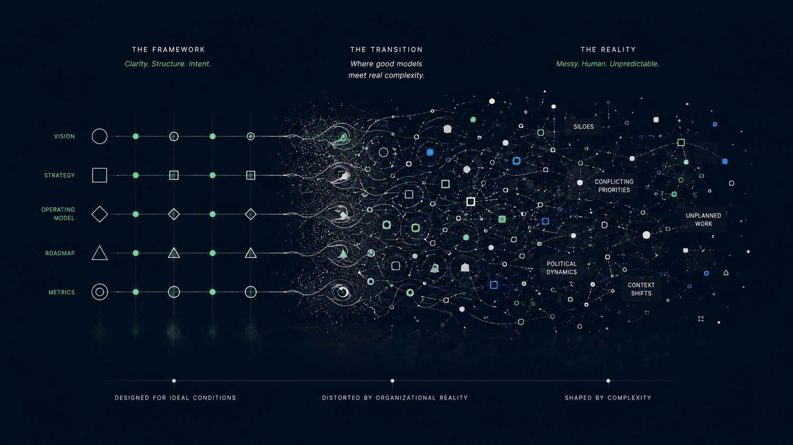
Frameworks Don't Survive Organizational Reality
Frameworks are useful until they collide with politics, incentives, legacy systems, acquisitions, market pressure, and organizational complexity.
Read perspective →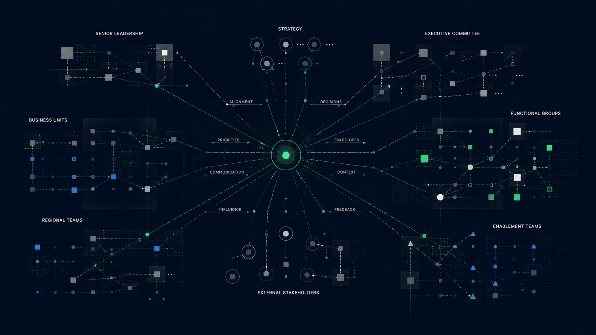
The Product Manager Is Often the Least Powerful Person in the Room
Modern product discourse often talks about ownership and empowerment. In practice, many product managers operate with responsibility but very limited actual authority.
Read perspective →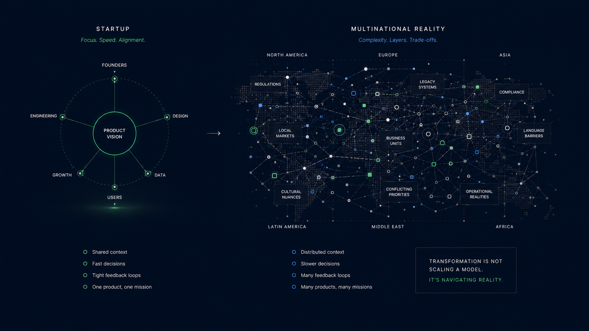
Why International Organizations Cannot Be Managed Like Silicon Valley Startups
Many modern management ideas were born in highly concentrated technology environments. International organizations operate under very different realities.
Read perspective →Transformation Under Pressure
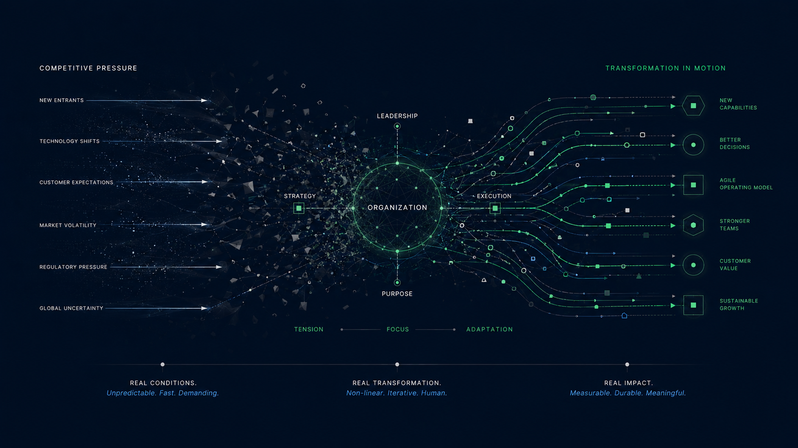
Transformation Does Not Happen in a Vacuum
Most transformation narratives assume organizations have the luxury of focus. In reality, many companies are trying to transform while simultaneously fighting for survival.
Read perspective →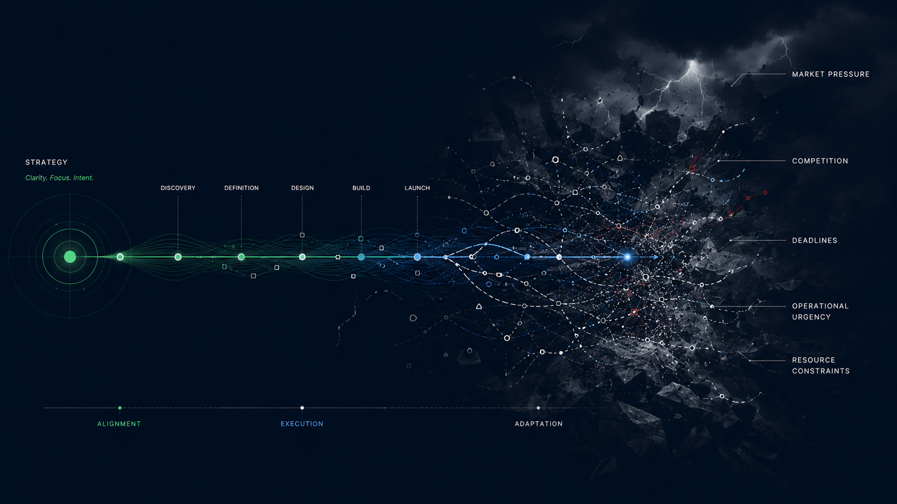
Ship or Die: Why Product Development Looks Different Inside Real Companies
Many organizations are not optimizing for perfect product processes. They are optimizing for survival, speed, market pressure, and business continuity.
Read perspective →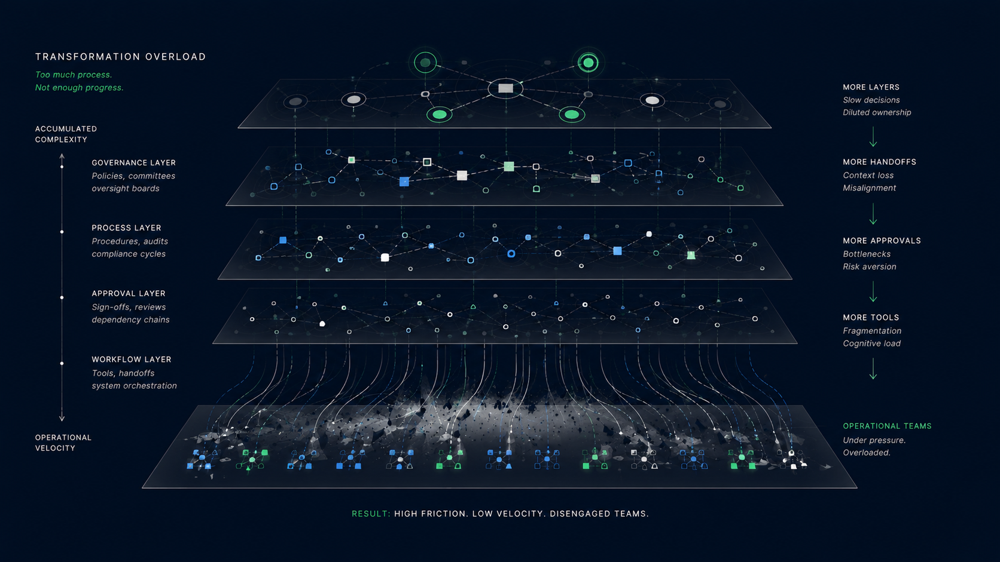
When Transformation Starts Feeling Like Friction
Transformation fails when organizations introduce complexity faster than teams experience meaningful operational improvement.
Read perspective →Transformation Is Not the Goal. Competitiveness Is.
Transformation only matters if it strengthens a company's ability to compete, adapt, execute, and survive in increasingly demanding markets.
Read perspective →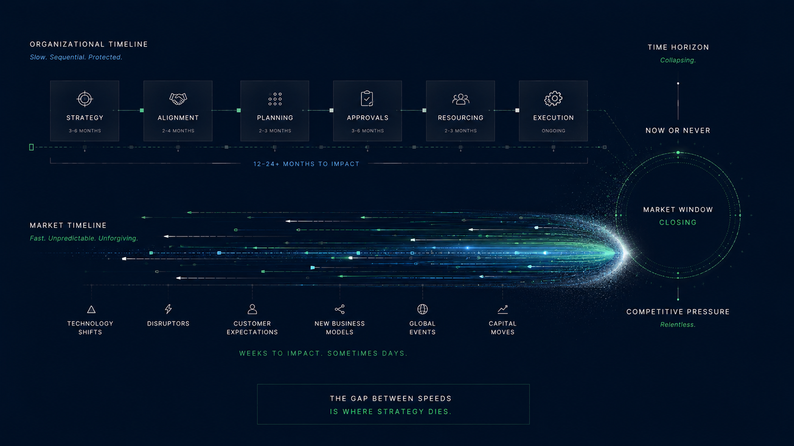
The Most Dangerous Transformation Illusion Is Thinking Time Exists
Many organizations behave as if transformation can happen gradually and comfortably while markets continue accelerating around them.
Read perspective →